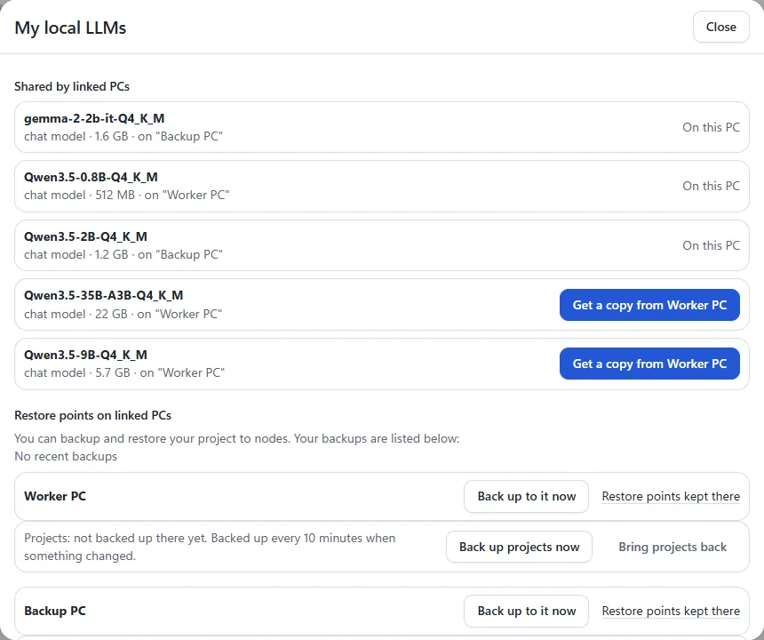

Backups and restore points
Projects and restore points on your other PCs; what is and is not backed up.
Your other PCs can keep copies of your projects and of TOMLIN's own data, over your home network, with no internet needed.
- Let a PC keep backups: on that PC, Network, Sharing and cluster permissions, tick Enable backups.
- Backups only: tick it on a linked PC's card on this PC (Network, under the linked PCs). No staff, chats, jobs or pictures run there, and no model is copied to it; it is first in line for project backups. Its card says what it keeps and how much disk is free.
- Your workspace is the folder TOMLIN keeps its own work in: every project made with Lets create a project, and the files your staff write and save. It is inside TOMLIN's data folder unless you chose another one (Settings, Files and blog writer, Workspace folder). The whole workspace is backed up with no tick: everything in it except
.gitandnode_modulesfolders. - Project backups: your workspace, and each Bridge project you tick Copy this project to my other PCs in its git window (Git), go to your linked PCs that have Enable backups ticked every 10 minutes when something changed, and only what changed is sent; each PC keeps the older versions too. In Models on my other PCs, Back up projects now sends them at once and Bring projects back puts a copy in a new folder, never over the project.
- Restore points (your chats, staff and settings): Models on my other PCs, Back up to it now beside a PC keeps one there (the newest 3 are kept); Restore points kept there lists them, and Bring back puts one in this PC's backups, which Settings, Data and lock, Put back uses. A restore point kept on another PC holds no keys to your linked PCs, no web search key, no sharing code and no PIN, so putting it back keeps this PC's own; one changed on that PC is refused when it comes back.

What TOMLIN backs up, and what it does not
What TOMLIN backs up, and what it doesn't. TOMLIN backs up your workspace, the projects you select, and its own data to your other PCs. It is not a full backup of your PC.
- Backed up: your workspace, and each project ticked Copy this project to my other PCs, every 10 minutes when something changed; every version is kept. Your chats, staff and settings as a restore point, only when you press Back up to it now; the newest 3 are kept on each PC.
- Not backed up: anything else on your PC (Documents, Desktop, Pictures, email, other folders). Files over 256 MB inside a ticked project. A project's git history: only its files go. Models: they are copied only to the PCs you send them to.
- Good to know: backups go only to your own PCs on your home network, never to the cloud, so a fire, flood or theft at home can take every copy. Backups are not locked on the PC that keeps them: whoever uses that PC can open them.
For everything else
For everything else. These free tools are made by other people. We don't make, check or support them, so read about each one and choose for yourself.
- Syncthing: keeps a folder the same on several PCs, like Dropbox without the cloud. Deleting a file deletes it everywhere unless you turn on its old versions.
- Kopia or restic: versioned backups of the folders you choose, to another drive, PC or network folder.
- UrBackup: makes one PC a backup server for your others.
- Windows File History: already in Windows; it keeps old versions of your files on another drive or network folder.
Backups of project folders to a drive (zips) are in The Bridge: backups.